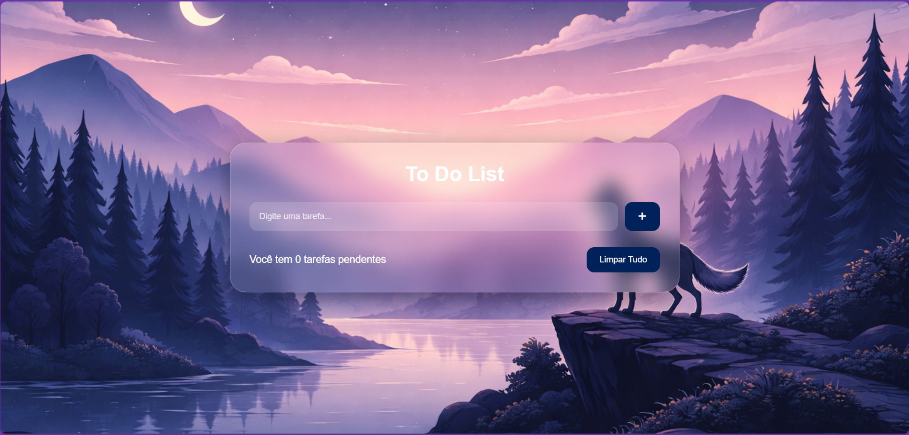
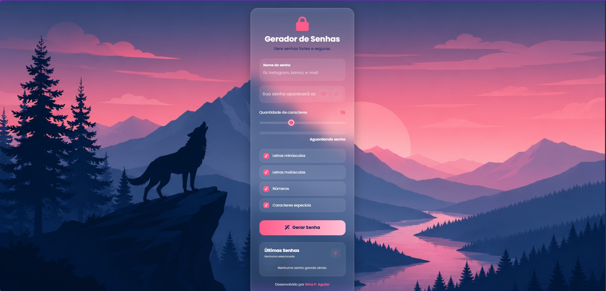
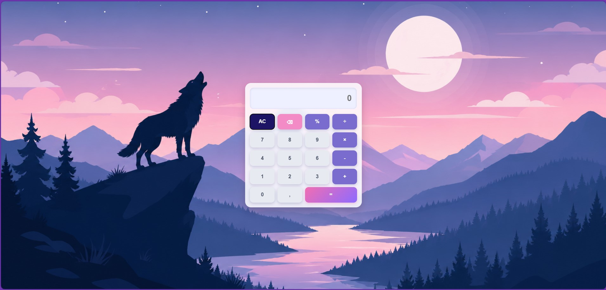

Skills
- Desenvolvimento Front-End
- Design Responsivo
- Integração com APIs
- Noções de Banco de Dados
- Git e Controle de Versão
Tech Stack

HTML

CSS

JavaScript
Git
GitHub
Sou estudante de Gestão da Tecnologia da Informação e desenvolvedora Front-End em formação. Crio projetos web com HTML, CSS e JavaScript, buscando unir design moderno, responsividade e soluções digitais funcionais.
Sou estudante de Gestão da Tecnologia da Informação e apaixonada por tecnologia, desenvolvimento web e resolução de problemas.
Minha trajetória profissional começou na área de atendimento e gestão de equipes, onde desenvolvi habilidades em liderança, comunicação, organização e tomada de decisões. Ao longo dessa jornada, descobri meu interesse pela tecnologia e iniciei minha transição para a área de desenvolvimento.
Atualmente, estou focada em aprimorar minhas habilidades em desenvolvimento Front-End, explorando tecnologias como HTML, CSS e JavaScript. Estou entusiasmada com a oportunidade de aplicar meus conhecimentos em projetos práticos, criar experiências digitais envolventes e contribuir para soluções inovadoras.
Meu objetivo é conquistar uma oportunidade de estágio ou atuar em projetos freelancer, continuando minha evolução profissional enquanto transformo ideias em experiências digitais funcionais e bem estruturadas.
Graduação em andamento
Formação técnica em andamento
HTML, CSS, JavaScript e projetos práticos
HTML
CSS
JavaScript
Git
GitHub

Aplicação de gerenciamento de tarefas desenvolvida para auxiliar na organização diária, permitindo adicionar, concluir e remover atividades de forma simples e intuitiva.

Gerador de senhas personalizáveis com opções de tamanho, caracteres especiais, letras maiúsculas e minúsculas, indicador de força da senha e cópia rápida para a área de transferência.

Calculadora interativa desenvolvida com HTML, CSS e JavaScript, oferecendo operações matemáticas básicas, suporte ao teclado e interface responsiva para diferentes dispositivos.
Estou disponível para oportunidades de estágio, projetos freelancer e desenvolvimento de páginas web.
Entrar em contato